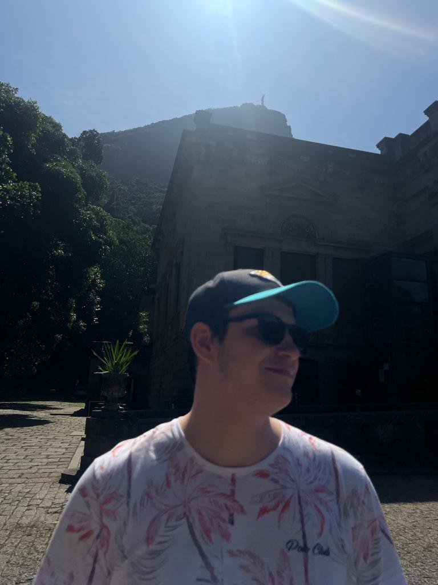

About
Hi, I'm João Gabriel Kasprik Arruda. Born in Curitiba-Paraná-Brazil, .NET & Rust developer, Cloud Solutions Architect and AWS certified.

Cloud Solutions Architect & Software Engineer.
- Birthday: 09 Dec 2000
- Phone: +351 913 443 908
- City: Porto, PT
- Age: 24
- Degree: Technology Graduate
- Email: contato@jaogabriel.dev
Technologies:
- C# / .NET
- Rust
- Terraform
- SQL
- No-SQL
- Docker
- Kubernets
- AWS
Resume
Sumary
João Gabriel
Inovative developer, with 4+ years experience in agile software development, driven by data and results. Love to code in TDD, study about design patterns and new techs.
- AWS - Certified - Cloud Pratictioneer
- Azure - Certified - AI-900
Education
Analysis and Systems Development
2021 - 2023
Unicesumar, Curitiba, PR
Technologist course in analysis and system development
Extension Course
2019 - 2021
Rockfeller Language Center, Curitiba, PR
Extension Course in English
IT Technician
2015 - 2018
TECPUC, Curitiba, PR
High School Vocational-Professional in Information technologies
Professional Experience
Software Engineer
June 2024 - Present
Grit Solutions
Porto, PT
- Development and maintenance of a corporate SaaS solution using .NET Framework 4.8, .NET Standard 2, .NET 6, and .NET 8, with deployment on Azure cloud infrastructure.
- The monolithic architecture consists of a legacy ASP solution, Angular frontend, and two APIs, with backend operations handled through SQL database functions, stored procedures, views, and Shell scripts.
- Implementation of new features and improvements across the full stack, with focus on architectural enhancements, infrastructure optimization, and code quality initiatives.
- Working with a complex enterprise system that processes critical business operations, requiring high reliability and maintainability standards.
Software Engineer
October 2022 - June 2024
TownSQ
Curitiba, PR, BRA
- Maintenance and development of applications in .NET 6.0, Serverless, and execution of software tests, automated and manual.
- The architecture is divided into microservices, our communication between APIs by events and messaging trough Amazon SQS and SNS.
- We use static code analysis tools like Sonar, and develop unit tests, and component tests. Currently we are developing our code with TDD and BDD.
- Working in Accounting System Integrations Team, an international team, we handle the integration between all the accounting systems to TownSQ system.
Back-end Developer
April 2022 - October 2022
Itaú Unibanco S/A
Curitiba, PR, BRA
- Maintenance and development of applications in .NET 3.1, 5.0 and 6.0, Serverless, and execution of software tests, automated and manual.
- The architecture is divided into microservices, our communication between APIs by events and messaging trough Amazon SQS and SNS.
- We use static code analysis tools like Sonar, and develop unit tests, and component tests. Currently we are developing our code with TDD and BDD.
- Worked in íon for advisors app
Back-end Developer
April 2021 - April 2022
Paraná Banco S/A
Curitiba, PR, BRA
- Maintenance and development of applications in Java 8, .NET 2.2, 3.1 and 5.0, Serverless, and execution of software tests, automated and manual.
- The architecture is divided into microservices, our communication between APIs by events and messaging trough Azure Service Bus.
- We use static code analysis tools like Sonar, and develop unit tests, and component tests. Currently we are developing our code with TDD and BDD.
- For data we use MSSQL and MongoDB, ORM Entity framework, Code First techniques using migrations, caching tools like Redis team divided into Squads. Our squad is focused on agile development and agile culture, always developing our product with the highest quality possible and ensuring deliveries and stories within the agreed deadlines.
- Worked in Paraná Banco Investimentos app
Intern Back-end Developer
April 2020 - April 2021
Paraná Banco S/A
Curitiba, PR, BRA
- Maintenance and development of applications in Java 8, .NET 2.2, 3.1 and 5.0, Serverless, and execution of software tests, automated and manual.
- The architecture is divided into microservices, our communication between APIs by events and messaging trough Azure Service Bus.
- We use static code analysis tools like Sonar, and develop unit tests, and component tests. Currently we are developing our code with TDD and BDD.
- For data we use MSSQL and MongoDB, ORM Entity framework, Code First techniques using migrations, caching tools like Redis team divided into Squads. Our squad is focused on agile development and agile culture, always developing our product with the highest quality possible and ensuring deliveries and stories within the agreed deadlines.
- Worked in Paraná Banco Investimentos app